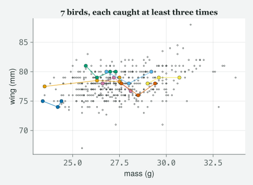
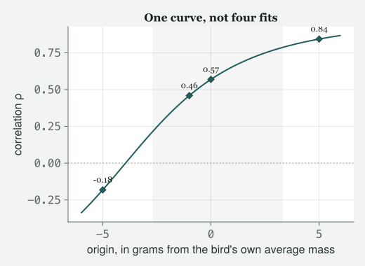
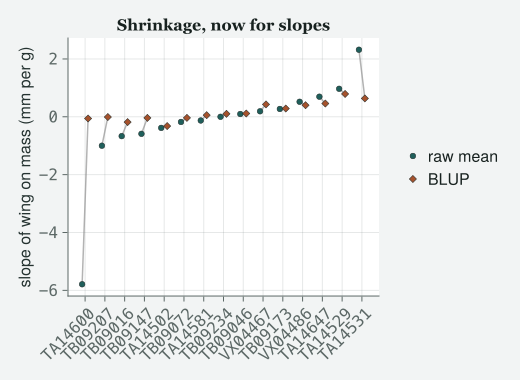
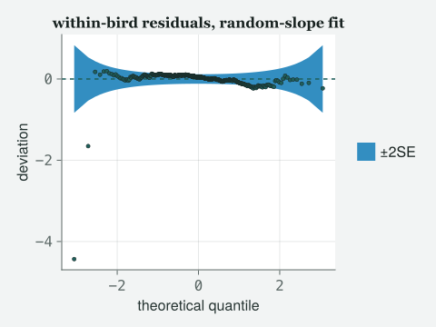

One extra term, two extra parameters, a correlation that changes its sign when you move the origin of a covariate without changing the model at all, and a slope variance that turns out to have been doing somebody else’s job.
Draft
All ten classes of version 1 run end to end (1–10), with Appendix A, the preface and the coda. Every number and figure on this page was computed when the site was built; the book itself is still being written.
Engines DRM.jl 0.7.1 at 26f4c4ddc (Julia 1.10.0) · drmTMB 0.7.0 (R 4.6.0) Provenance Every block of Julia code on this page ran when the site was built, including the one that fails and the two that catch a failure and report it. Nothing is pasted from a session you cannot see. Every random draw comes from a generator set up in the block that uses it. The one R block was run once by hand, on the date shown (2026-09-07), against the file this chapter’s first block writes; the script is kept at data/ch7/ch7-r-box.R. Caveat The data are real. These are the Lundy Island house sparrows of the author’s 2012 course, read from the archived data/2012/BodySize.csv with the repeated measurements intact (where the file comes from is recorded in data/2012/README.md). The only simulated quantities are drawn from models fitted to that file, from random-number generators set up in the code you can see.
A note on the data, and a note on the covariate. Same file as Class 6: the repeated body-size measurements on the Lundy sparrows. Class 6 used tarsus length as the predictor and freed the intercept. Today we free the slope, and the first thing the class does is discover, in a cell, that tarsus is the wrong column to try it on — and which column is the right one. Nothing here is invented; the two failures happened when the page was built, and are shown as they happened.
Objectives
By the end of this class you should be able to:
Say what a random slope frees, and check before you fit it whether your covariate varies enough within groups for the question to have an answer.
Fit (1 + x | group) and read the two standard deviations and the correlation out of the covariance block the engine returns.
Explain why the intercept–slope correlation changes — and can change sign — when you move the origin of the covariate, without one thing about the model changing.
Compare a random-slope model against a random-intercept model with AIC and with a likelihood-ratio test, and say why the usual reference distribution for that test is the wrong one when the thing you are testing is a variance.
Describe what shrinkage does to a group’s slope, and say why a group with three measurements keeps only a little of the slope its own points suggest.
Split a repeated-measures covariate into its within-group and between-group parts, and say what a single coefficient on the unsplit covariate is a blend of.
The class
Itchy’s office, 9:00 am. TOTO has come straight from Class 6 with the
caterpillar plot still open on the laptop. MOMO is here early with a
question she wrote down last week and did not ask. EDDIE has brought a
dunnock dataset he intends to break. JARO is in the corridor and will be
needed by the end of the hour.
Itchy
Last week I drew you a picture and said one sentence about it that I
want back before we start. Toto. The picture with all the bird lines in
it.
Toto
They were all parallel.
Itchy
All parallel. Every bird got to sit high or low; none of them got its
own steepness. That was the restriction, and you could see it in the
plot, which is why I drew it. Today we take it out. But not the way you
are about to.
Momo
Meaning we do not just type it.
Itchy
Meaning we do not just type it. A random slope asks whether the
relationship between y and x differs from group to
group. Before you can ask that, x has to differ within a group.
Otherwise there is nothing for a per-bird slope to be estimated
from, and the software will find that out about ninety seconds
after you do, in a worse mood. So: file first.
Which column actually moves within a bird
include("../tools/figures.jl")usingDRM, DataFrames, CSV, Statistics, Random, LinearAlgebra, Printf, Logging, CairoMakieusingDistributions: Chisq, ccdfset_theme!(theme_itchy(:light))raw = CSV.read("../data/2012/BodySize.csv", DataFrame; missingstring ="NA")# Class 6's cleaning, one column different: today's covariate is mass, so the# rows we need complete are wing and weight.sparrows =dropmissing(raw, [:Wing, :Weight])w_bar =mean(sparrows.Weight)sparrows.wc = sparrows.Weight .- w_bar # mass, centred on its own mean# Each bird's own mean mass, and each capture's departure from it. The last# section of this class needs both; nothing before it does.bird_mass =combine(groupby(sparrows, :BirdID), :Weight => mean =>:m)joined =leftjoin(sparrows, bird_mass, on =:BirdID)sparrows.wbar = joined.m .- w_bar # the bird's own average mass, centredsparrows.wdev = sparrows.Weight .- joined.m # this capture, relative to that birdmkpath("../data/ch7")CSV.write("../data/ch7/sparrows-weight.csv", sparrows)n =nrow(sparrows)bird_ids =sort(unique(sparrows.BirdID))birds =length(bird_ids)row_of =Dict(b => i for (i, b) inenumerate(bird_ids))gi = [row_of[b] for b in sparrows.BirdID] # each row's bird, as an indexnothing
Itchy
The file, cleaned the way Class 6 cleaned it, except that the column we
need complete today is mass rather than tarsus.
@printf("rows %d on %d birds\n\n", n, birds)per_bird =combine(groupby(sparrows, :BirdID), nrow =>:k)for k insort(unique(per_bird.k))@printf("%3d birds measured %d times\n", count(==(k), per_bird.k), k)endk_med =median(per_bird.k)@printf("\nmedian measurements per bird: %.1f\n", k_med)
rows 459 on 171 birds
85 birds measured 2 times
55 birds measured 3 times
31 birds measured 4 times
median measurements per bird: 3.0
Momo
Two, three or four. That is not a lot of points to fit a line through.
Itchy
It is not, and hold that thought until the caterpillar, where it becomes
the whole lesson. First the question I asked in the corridor: which of
these columns moves within a bird? You already have the tool. A
repeatability is the share of variance that sits
between individuals, so one minus it is the share that
sits within.
candidates = [:Tarsus, :BillL, :BillW, :Tail, :Weight]share_within =Dict{Symbol,Float64}()within_sd =Dict{Symbol,Float64}()@printf("%-8s %6s %8s %8s %12s\n", "column", "rows", "R", "1 - R", "within SD")for c in candidates d0 =dropmissing(sparrows, [c]) d =DataFrame(BirdID = d0.BirdID, y =Float64.(d0[!, c])) R =repeatability(drm(bf(@formula(y ~1+ (1|BirdID))), Gaussian(); data = d)).estimate share_within[c] =1- R g =combine(groupby(d, :BirdID),:y => (v ->length(v) >1 ? std(v) :missing) =>:sw) within_sd[c] =mean(skipmissing(g.sw))@printf("%-8s %6d %8.4f %8.4f %12.4f\n", c, nrow(d), R, 1- R, within_sd[c])end
Tarsus is 7.1% within a bird and the rest between, which is Class 6’s
number arriving as a warning rather than as an aside. A grown sparrow’s
leg bone does not change between captures, so if you ask for a per-bird
slope on tarsus you are asking 171 birds to tell you the
steepness of a line from points that are all stacked on top of each
other. Mass is near the other end of the table: 41.8% of the variation
in mass is a bird differing from itself.
Eddie
Because mass is condition and tarsus is architecture.
Itchy
Because mass is condition and tarsus is architecture, and that
distinction is worth more than any of today’s arithmetic.
Momo
Then why mass? Bill width has a larger within-bird share than mass does.
It is the largest in the table.
Itchy
It is, and I am glad you read the whole column rather than the row I
pointed at, because that is the trap in this table and I was going to
walk into it deliberately. A share does not tell you what the
variation is made of. A grown sparrow’s bill width is
architecture too, and its within-bird share is large because the trait
is a couple of millimetres wide and the calipers are not that precise,
so most of what moves between captures is the measuring rather than the
bird. Look at the two numbers together: bill width moves 48% of its
variation within a bird, and that movement is 0.1503 of a millimetre.
Mass genuinely changes: a sparrow is heavier after a good week and
lighter after a bad one, and 0.991 grams of within-bird movement is a
bird, not a ruler.
Momo
So the rule is not “pick the biggest share”.
Itchy
The rule is: pick a covariate whose within-group variation is a
thing that happens, not a thing you did. Then check that its
share is large enough to estimate from. Mass passes both. So today’s
covariate is mass, and today’s question is: when a bird
is heavier, is its wing measured longer, and by the same amount
in every bird? Look at it before you model it.
k_of =Dict(r.BirdID => r.k for r ineachrow(per_bird))repeat_ids = [b for b in bird_ids if k_of[b] >=3]# Birds at even intervals through the ordering by mean mass, so the choice of# which to draw is a rule and not a preference. Every twelfth, not every# sixth: the house palette has four colours, and twelve birds at a time keeps# each colour to two birds instead of three or four sharing it.mean_mass = [mean(sparrows.Weight[sparrows.BirdID .== b]) for b in repeat_ids]shown = repeat_ids[sortperm(mean_mass)][1:12:length(repeat_ids)]fig =Figure(size = (520, 380))ax =Axis(fig[1, 1]; xlabel ="mass (g)", ylabel ="wing (mm)", title ="$(length(shown)) birds, each caught at least three times")scatter!(ax, sparrows.Weight, sparrows.Wing; markersize =4, color = (:grey, 0.3))# The house palette, taken from the theme rather than invented, so that ONE# colour serves a bird's points AND its line. Two palettes would give every bird# two colours and the eye could not follow it through the crowded middle, which# is this figure's whole job.palette =to_value(Makie.current_default_theme().palette.color)# Colour alone is not enough here: the palette's "warn" and "muted" swatches# are only about 4/255 apart in greyscale luminance, so they land as the same# grey blob once colour is taken away (print, e-ink, a colour-vision# simplification). Line style and marker shape are a second and third# channel, cycled on a period of 3 rather than the colour's 4, so every bird# shown here (up to twelve) gets a unique (colour, style, shape) triple# instead of four colours repeating three times each.styles = [:solid, :dash, :dashdot]markers = [:circle, :rect, :utriangle]for (i, b) inenumerate(shown) rows =sortperm(sparrows.Weight[sparrows.BirdID .== b]) m =findall(sparrows.BirdID .== b)[rows] col = palette[mod1(i, length(palette))] ls = styles[mod1(i, length(styles))] mk = markers[mod1(i, length(markers))]scatter!(ax, sparrows.Weight[m], sparrows.Wing[m]; markersize =10, color = col, marker = mk)lines!(ax, sparrows.Weight[m], sparrows.Wing[m]; color = (col, 0.7), linewidth =1.4, linestyle = ls)endfig

Figure 1: Every twelfth bird, in the ordering by mean mass, among those measured at least three times — a rule, not a preference — with each bird’s own captures joined in order of mass. A bird’s identity is its colour, its line style and its marker shape together: two of the house palette’s four colours sit close enough in brightness that colour alone does not survive greyscale or print, so style and shape carry the difference where colour cannot. The house palette has four colours and three line styles, so any selection of up to twelve birds gives each one a colour/style/shape combination no other bird in the plot shares, and 8 are shown here. Grey is the whole file. A random slope is the claim that these little segments do not all have the same steepness.
Toto
Some of them go up and some of them go down.
Itchy
Some of them go up and some of them go down, and that is the
picture of the thing we are about to put a number on. Whether the
up-and-down is real or is what three points do when you join them is the
entire content of the hour.
The slope you have been sharing
Itchy
Two fits, in order of how much they let the birds get away with. Watch
the slope, and watch its standard error, because Class 6 left you a
promise about the standard error that I have to keep today.
slope SE residual SD
no bird at all 0.4430 0.0547 2.1253
+ (1|BirdID) 0.1844 0.0512 1.1256
Momo
The standard error went down. Last week it went up.
Itchy
Last week it went up, and last week I told you it would not always. Now
watch me get caught by my own rule, because this is the useful part of
the hour and I would rather you saw it happen than took a corrected
sentence from me later. Momo, read Class 6’s rule back at me and then
read my own table back at me.
Momo
Class 6 said a predictor that varies mostly between groups gets
a standard error that is too small when you ignore the grouping, and a
predictor that varies mostly within goes the other way. And
your table two cells ago says mass is 58.2% between-bird.
Itchy
Which is mostly between, by Class 6’s own phrasing, and Class
6’s rule therefore predicts the standard error goes up.
It went down. So the rule as Class 6 stated it is too simple, and this
is the correction. Read the third column.
Toto
The residual standard deviation collapsed.
Itchy
From 2.1253 millimetres to 1.1256, which is a factor of 3.6 in residual
variance. That is what a bird term buys you and it is what
Class 6’s rule leaves out. Two things happen at once when you
add (1 | g): you stop counting repeated
measurements as fresh evidence, which pushes the standard error up, and
you take an enormous amount of noise out of the residual, which pulls it
down. Which one wins is a trade-off between them; it is not settled by
which side of one half the within-share falls on. Here the second wins
and the standard error falls to 0.936 of what it was, a cut of 6.4%.
Momo
So Class 6’s rule is wrong.
Itchy
Class 6’s rule is a special case advertised as a general one, which is
the commonest way for a true sentence to be wrong. Keep the mechanism,
drop the arithmetic test.
Toto
And the slope halved.
Itchy
The slope more than halved, from 0.443 to 0.1844 millimetres of wing per
gram, which is a bigger move than anything Class 6 showed you. That is
the second thing this predictor is doing, and it is bigger than today’s
subject. The pooled line is answering a blend of two questions — heavier
birds are bigger birds, and a given bird gains and loses mass — and
putting a bird term in the model changes the blend without separating
it. We will separate it, on this page, in the last section of
the class. Everything between here and there is fitted on the
blended model, and I will tell you exactly which numbers move when we
pull it apart.
Measurement i on bird j, and the same six symbols as
Class 6 with two additions. u_0j is the bird’s own nudge to the
intercept, which is exactly last week’s u_j. u_1j is the bird’s own
nudge to the slope, and it is new. They are drawn
together, from a two-dimensional normal, so there are three numbers in Σ
rather than one: σ_0 the spread of intercepts, σ_1 the spread of slopes,
and ρ the correlation between a bird’s intercept and its slope.
Eddie
Three numbers, and the model gained two parameters rather than one.
Itchy
Two: σ_1 and ρ. Remember that, because it is what the test at the end is
testing. In code it is one term, and you have seen the shape of it
before.
drm(bf(@formula(Wing ~ Weight + (1+ Weight|BirdID))), Gaussian(); data = sparrows)
DomainError with -1.4757395258967641e20:
log was called with a negative real argument but will only return a complex result if called with a complex argument. Try log(Complex(x)).
(stack trace omitted)
Toto
That is not a warning, that is a crash.
Itchy
That is a crash — the only one I let through uncaught today; the origins
table and the simulation study later on both catch failures of the same
kind and report them instead — and I put it in front of you rather than
tidying it away because you will meet it on your own data this week.
Read what it says. Something took the logarithm of a negative number,
deep inside the optimiser, while it was differentiating. Momo, guess
what quantity a mixed model takes the logarithm of.
Momo
A variance. Or a standard deviation.
Itchy
A standard deviation, because that is how you keep it positive: you
optimise its logarithm. So the message is the optimiser walking off the
end of the world while trying to make some standard deviation smaller
and smaller. Now the same model with the covariate centred —
Weight replaced by wc, in both places it
appears, and nothing else.
wc instead of Weight. That is the centred one
from the setup cell.
Itchy
Mass minus its own mean, 27.565 grams, and nothing else. Same data, same
response, same formula shape, same family. One fit dies and one
converges, and the only difference is where zero is.
Momo
That cannot be a real difference between models.
Itchy
It is not a real difference between models, and I am going to prove that
to you in the next ten minutes with a number. Read the new block first.
There is no resd line this time; there is a random-effect
covariance block — the engine calls it recov, and you will
see that name again in a moment — printed as a Cholesky
factor — a square-root-like rewriting of the covariance matrix,
which the optimiser works with because it keeps the matrix valid while
it searches — with three entries in it. You cannot read σ_0, σ_1 or ρ
straight off it, which is why the next cell takes them out properly.
V =vc(rs_fit)[:BirdID] # the 2x2 covariance of (intercept, slope)sd0, sd1 =sqrt(V[1, 1]), sqrt(V[2, 2])rho = V[1, 2] / (sd0 * sd1)sigma_e =first(sigma(rs_fit))b_rs =coef(rs_fit, :mu)@printf("sigma_0 (spread of bird intercepts) : %.4f mm\n", sd0)@printf("sigma_1 (spread of bird slopes) : %.4f mm per g\n", sd1)@printf("rho (their correlation) : %+.4f\n", rho)@printf("sigma (within a bird) : %.4f mm\n\n", sigma_e)@printf("population slope beta1 : %.4f SE %.4f\n", b_rs[2], stderror(rs_fit)[2])@printf("re_sd(rs_fit) returns : %s\n", re_sd(rs_fit))
sigma_0 (spread of bird intercepts) : 1.7177 mm
sigma_1 (spread of bird slopes) : 0.4308 mm per g
rho (their correlation) : +0.2354
sigma (within a bird) : 1.0179 mm
population slope beta1 : 0.1816 SE 0.0618
re_sd(rs_fit) returns : Dict{Symbol, Float64}()
Eddie
re_sd came back empty.
Itchy
re_sd came back empty, and that is a fact about this
version of the engine rather than about your model. It reports scalar
random-effect standard deviations, and a correlated block is not a
scalar, so it declines rather than picking one. For anything
with a slope in it, vc(fit) is the accessor, and
what it hands you is the covariance matrix, not the standard deviations.
Take the square roots of the diagonal yourself and divide for the
correlation, exactly as the cell does. Do not go looking for the
correlation in the printed block either: L11,
L22 and L21 are the Cholesky factor the engine
optimises, not σ_0, σ_1 and ρ.
Toto
So a bird’s own slope is the population slope plus its nudge, and the
nudges have a standard deviation of 0.4308.
Itchy
Which you should immediately compare with the population slope itself,
0.1816. The spread of the slopes is larger than the average slope. If
you take that at face value, a good number of these birds have a
negative slope while the average bird has a positive one.
Whether you should take it at face value is the second half of the hour.
The correlation you did not ask for
Momo
I want to go back. You said you could prove the crash was not a real
difference between models.
Itchy
And ρ is how. Fit the same model at four origins, changing nothing else
— twenty grams, twenty-four, the mean, thirty. And beside each fit, work
out what Σ itself looks like at that origin, which you can do
without refitting anything, because shifting the origin by
a is a change of coordinates with a known formula.
# The algebra of moving zero. With a = w_bar - c, the intercept at origin c is# u0' = u0 + a*u1, so Var(u0') = s0^2 - 2a*Cov + a^2*s1^2 and Cov' = Cov - a*s1^2.# sigma_1 and the likelihood cannot move: shifting the origin slides the matrix# without squashing it, so its determinant is unchanged.shifted(a) = [V[1,1] -2a*V[1,2] + a^2*V[2,2] V[1,2] - a*V[2,2] V[1,2] - a*V[2,2] V[2,2]]functionat_origin(origin) d =DataFrame(BirdID = sparrows.BirdID, Wing = sparrows.Wing, x = sparrows.Weight .- origin) f =drm(bf(@formula(Wing ~ x + (1+ x|BirdID))), Gaussian(); data = d) W =vc(f)[:BirdID] s0, s1 =sqrt(W[1, 1]), sqrt(W[2, 2])return (; sd0 = s0, sd1 = s1, rho = W[1, 2] / (s0 * s1), sigma =first(sigma(f)), aic =aic(f), b1 =coef(f, :mu)[2])endorigins = [20.0, 24.0, w_bar, 30.0]@printf("%-14s %9s %9s %9s %9s %12s\n","x = mass -", "sigma_0", "sigma_1", "rho", "sigma", "AIC")rows =map(at_origin, origins)for (o, r) inzip(origins, rows)@printf("%-14.3f %9.4f %9.4f %+9.4f %9.5f %12.4f\n", o, r.sd0, r.sd1, r.rho, r.sigma, r.aic)end@printf("\nlargest AIC difference across the four : %.3e\n",maximum(r.aic for r in rows) -minimum(r.aic for r in rows))@printf("largest slope difference across the four: %.3e\n\n",maximum(r.b1 for r in rows) -minimum(r.b1 for r in rows))# Now Sigma itself, at origins the engine refuses as well as ones it accepts.@printf("%-12s %12s %12s %12s %11s %9s\n","origin", "det Sigma", "min eigval", "cond", "rho", "posdef")for c in [0.0, 5.0, 10.0, 20.0, w_bar, 30.0] S =shifted(w_bar - c)e=eigvals(Symmetric(S))@printf("%-12.3f %12.4f %12.6f %12.0f %+11.5f %9s\n", c, det(S), minimum(e), maximum(e) /minimum(e), S[1,2] /sqrt(S[1,1] * S[2,2]), isposdef(Symmetric(S)))end# And what the engine does with each of them.@printf("\n%-12s %-16s %10s %10s\n", "origin", "engine", "logLik", "sigma_1")for c in [0.0, 5.0, 10.0, 20.0, w_bar, 30.0] d =DataFrame(BirdID = sparrows.BirdID, Wing = sparrows.Wing, x = sparrows.Weight .- c)try f =drm(bf(@formula(Wing ~ x + (1+ x|BirdID))), Gaussian(); data = d)@printf("%-12.3f %-16s %10.4f %10.4f\n", c, "fits", loglik(f), sqrt(vc(f)[:BirdID][2,2]))catche@printf("%-12.3f %-16s\n", c, string(nameof(typeof(e))))endend
The correlation changed sign, from -0.8632 at twenty grams to 0.6566 at
thirty. And read the last two columns of the first table before anyone
gets excited: σ_1 is the same to four decimal places in every row, σ is
the same, the slope is the same, and the AIC differs by 4e-12.
These are not four models. This is one model, written down four
ways.
Momo
Then what is ρ a statement about?
Itchy
ρ is the correlation between a bird’s slope and its intercept, and its
intercept is its predicted wing length at x equal to
zero. Move zero and you are asking about the bird’s wing length
at a different mass, so of course the correlation changes. At twenty
grams, which is below every bird in the file, “intercept” means an
extrapolation backwards, and a bird with a steeper slope necessarily
extrapolates to a lower value — hence a negative correlation,
manufactured by the arithmetic. At thirty grams, which is above most of
these birds though still inside their range, the tilt goes the other way
for the same reason. At the mean, ρ is closest to being about the birds
and not about the origin.
Eddie
And at zero grams the extrapolation is so far out that Σ falls apart and
the fit dies.
Itchy
That is the story I would have told you, and it is wrong, and the second
and third tables are there to stop me telling it. Read them.
Momo
Σ at zero grams is a perfectly good covariance matrix. Its determinant —
one summary number that would go to zero if the matrix were collapsing —
is 0.5172, the same as at every other origin in the table.
Itchy
The same at every origin, and that is not luck: moving zero slides the
matrix sideways without squashing it, and sliding cannot change that
number. So Σ never collapses, at any origin, ever. What it does
get is lopsided — the ratio of its largest direction to its smallest is
34993 at zero grams against 17 at the mean — but lopsided is not
collapsed, and the correlation at zero is -0.9896, not minus one.
Eddie
And the third table says the engine fits it at ten grams, where the
correlation is already minus point nine seven.
Itchy
Fits it at ten, at twenty, at the mean, at thirty, always at the same
log-likelihood, and refuses below ten — with two different error
messages, which is the tell. So the failure is not at ρ equal
to minus one, because the engine sails past minus point nine seven.
Where is it, then? In the engine’s own arithmetic, and the printed block
already tells you where. L11 was 0.541, which is the
logarithm of σ_0: the engine keeps its standard deviations on a
log scale from the start, so no standard deviation is ever
handed to log while it searches. There is exactly
one logarithm left in the calculation, and it is of a small quantity
worked out once per bird from four numbers multiplied and subtracted — a
two-by-two determinant. With uncentred mass two of those four numbers
are huge and almost equal, so their difference — which ought to be a
small positive number — comes out negative in the
computer’s arithmetic, and that is what gets handed to
log. Hence the error, and hence the number in it: -1.5e+20,
which is nobody’s standard deviation.
Toto
So it is not a boundary at all. It is arithmetic.
Itchy
It is an arithmetic failure inside this engine’s
optimiser, and I want the distinction in your notes because the
two get confused constantly. lme4 fits this same uncentred
model to this same maximum; the model is fine and the coordinates are
not. That is a smaller claim than the one I nearly made and a more
useful one, because it tells you the fix rather than a fatalism:
centring drives that cross term to zero, so it is not cosmetic, and on
this engine it is the difference between a fit and no fit.
Momo
And the sign change?
Itchy
Is a separate fact with a shared cause — the origin — and I nearly
welded them into one sentence. Where zero is changes ρ,
exactly and reversibly; and where zero is also decides
whether this optimiser can compute a determinant. One cause, two
consequences, neither of which is a boundary. So: report ρ with its
origin in the same sentence, and centre a covariate whose zero is
outside its range, every time.
Toto
Show me the sign change instead of making me read it off a column.
Itchy
Fair — ρ is a function of one number, where you put zero, and a function
of one number is a curve, not four separate fits. Same Σ, same
shifted you just watched check the determinant; sweep it
and mark the table’s four origins on it.
rho_at(t) = (S =shifted(-t); S[1, 2] /sqrt(S[1, 1] * S[2, 2]))t_zero =-V[1, 2] / V[2, 2] # where the correlation is exactly zerot_grid =range(minimum(origins) - w_bar -1, maximum(origins) - w_bar +1, length =200)origin_t = origins .- w_barfig =Figure(size = (520, 380))ax =Axis(fig[1, 1]; xlabel ="origin, as mass minus $(round(w_bar, digits =1)) g (g)", ylabel ="correlation ρ", title ="One curve, not four fits")vspan!(ax, minimum(sparrows.wc), maximum(sparrows.wc); color = (:grey, 0.08))hlines!(ax, [0.0]; linestyle =:dot, color = (:grey, 0.6))lines!(ax, t_grid, rho_at.(t_grid); linewidth =2)scatter!(ax, origin_t, [r.rho for r in rows]; markersize =11, marker =:diamond)for (t, r) inzip(origin_t, rows)text!(ax, t, r.rho; text =string(round(r.rho, digits =2)), align = (:center, :bottom), offset = (0, 8), fontsize =12)endfig

Figure 2: The correlation ρ, as a continuous function of where mass is centred, built from the same Σ and the same shifted() algebra as the numbers above — no refitting, because ρ moves by arithmetic alone. It crosses zero at one particular mass, marked where the curve meets the dotted line; negative to the left of that point, positive to the right. The four diamonds are the four origins from the table above, now four points on one curve instead of four separate fits, each labelled with the ρ already read out loud. The shaded strip is the mass this file actually contains: twenty grams, one of the four origins, sits outside it — the arithmetic behind calling ρ there an extrapolation backwards.
Itchy
26.63 grams — that is where ρ is exactly zero, not at some special
boundary, just the one mass at which the curve crosses its own axis.
Left of it, negative; right of it, positive; and the four points are the
four rows of that table, now impossible to mistake for four different
models.
Momo
Then what is the ρ we have?
Itchy
0.2354, at a mass of 27.565 grams, and the honest reading is: birds that
are longer-winged at average mass tend, mildly, to gain more measured
wing per gram. Mildly. Look at its standard error in the R box at the
bottom before you write a sentence about it.
Is the extra term worth it
Itchy
Two models, nested, one estimator. Toto, before we test anything, the
cheap comparison.
npar(f) =round(Int, (aic(f) +2*loglik(f)) /2) # AIC = 2k - 2 logLik@printf("%-22s %8s %12s %12s\n", "", "params", "logLik", "AIC")for (nm, f) in (("wc + (1|BirdID)", ri_fit), ("wc + (1 + wc|BirdID)", rs_fit))@printf("%-22s %8d %12.4f %12.4f\n", nm, npar(f), loglik(f), aic(f))endd_aic =aic(ri_fit) -aic(rs_fit)@printf("\nAIC drops by %.4f for two extra parameters\n", d_aic)
params logLik AIC
wc + (1|BirdID) 4 -883.5938 1775.1876
wc + (1 + wc|BirdID) 6 -872.6137 1757.2273
AIC drops by 17.9603 for two extra parameters
Toto
That is a big drop.
Itchy
It is a big drop, and AIC has already charged us two parameters for it.
Now the test, and the test is where this chapter runs into Class 8’s
subject, so I am going to ask the naive question first and read what the
engine says back. Class 8 takes the boundary apart properly, next week.
lrtest(ri_fit, rs_fit)
┌ Warning: lrtest: `full` adds variance-component block(s) [:recov] that `reduced` lacks, so this compares a variance component against 0 — a BOUNDARY null. The reported χ²(2) p-value is INVALID there (conservative: too large, so the test loses power); the correct reference is a chi-bar-square mixture. Use `lrt_boundary(full, reduced; q = <#components>)` (or a parametric bootstrap) for a boundary-correct p-value.
The same warning Class 8 is built around. It gave me the number and told
me not to use it.
Itchy
Same warning, same reason. σ_1 cannot be negative, so testing it at zero
is a test on the boundary of the parameter space, and χ² with two
degrees of freedom is not the right reference. Ask for the corrected
one.
stat =2* (loglik(rs_fit) -loglik(ri_fit))engine =lrt_boundary(rs_fit, ri_fit; q =2)# Stram & Lee's case is EXACTLY this one: a model with q random effects against# the same model with q+1. For q = 1 the null is a 50:50 mixture of chi-squared# with 1 and 2 degrees of freedom -- NOT the engine's q = 2 mixture, which is# built for two INDEPENDENT boundary parameters (0.25, 0.5, 0.25 on 0, 1, 2 df).p_stramlee =0.5*ccdf(Chisq(1), stat) +0.5*ccdf(Chisq(2), stat)@printf("LR statistic : %.4f\n\n", stat)@printf("naive chi-squared(2) : %.3e\n", engine.pvalue_naive)@printf("engine, lrt_boundary(...; q = 2) : %.3e\n", engine.pvalue)@printf("Stram & Lee mixture, 0.5 chi2(1) + 0.5 chi2(2): %.3e\n", p_stramlee)
Three numbers, all tiny, and I want you to notice that first,
because it means nothing in this paragraph changes the decision. Now the
part that matters when the numbers are not tiny. Jaro is in the
corridor.
Jaro
(from the doorway) You want the mixture.
Itchy
I want the mixture.
Jaro
Self and Liang (1987) worked out what the likelihood-ratio statistic
does when the null value sits on the boundary of the parameter space;
Stram and Lee (1994) applied it to the mixed model, and their result is
stated for exactly the step you have just taken — a model with
q random effects against the same model with q plus
one. Going from a random intercept to a random intercept and slope is
q equals one, and the null is a fifty-fifty mixture of
chi-squared with one degree of freedom and chi-squared with
two.
Momo
But we asked the engine for two boundary parameters and it gave us a
different number.
Jaro
Because lrt_boundary with q equal to two
implements a different mixture, and its documentation says which: a
quarter, a half and a quarter, on zero, one and two degrees of freedom.
That is the right answer for two independent variances
both tested at zero — two separate grouping factors, say. It is not this
case. Here the two extra parameters are a variance, which is on the
boundary, and a correlation, which is not; and when the
variance goes to zero the correlation stops existing at all. That is
precisely the situation Stram and Lee handled, and their weights are the
fifty-fifty ones.
Eddie
So the engine is wrong.
Jaro
The engine is answering the question you asked it. It offers the mixture
for q independent boundary parameters and it says so in its own
help text; you passed it a q that describes the count of
parameters rather than the structure. It has no way to know that one of
your two is a correlation. Read the assumptions on a correction
before you take its p-value, which will be the same sentence as
the whole of Class 8 with different nouns in it.
Itchy
And write down the ordering, because it holds generally: naive is the
most conservative, the fifty-fifty mixture is next, and the engine’s
q equal to two is the most liberal of the three. If a decision
of yours ever sits between two of those, you do not have a result, you
have a reference-distribution argument, and the way out of it is a
parametric bootstrap on your own design — simulate from your own fitted
model, refit, and build your own reference distribution from the results
instead of borrowing one off a shelf. We will do one at the end of the
hour.
What the model does to a bird’s own slope
Eddie
Here is what I actually want to know. The model says the spread of
slopes is 0.431. If I fit a line through one bird’s own points, do I get
its slope?
Itchy
You do not, and the gap is the lesson. Take the birds with at least
three captures, fit each bird’s own line by ordinary least squares with
nothing borrowed from anybody, and put those next to what the model
predicts for the same birds.
B =ranef(rs_fit)[:BirdID] # 171 x 2: column 1 intercepts, column 2 slopesmodel_slope = b_rs[2] .+ B[:, 2]own_slope =Dict{String,Float64}()for b in repeat_ids m = sparrows.BirdID .== b x, y = sparrows.wc[m], sparrows.Wing[m] own_slope[b] =cov(x, y) /var(x)endols = [own_slope[b] for b in repeat_ids]mod = [model_slope[row_of[b]] for b in repeat_ids]@printf("birds with at least three captures : %d of %d\n\n", length(repeat_ids), birds)@printf("%-24s %9s %9s %9s\n", "", "SD", "min", "max")@printf("%-24s %9.4f %9.4f %9.4f\n", "each bird on its own", std(ols), minimum(ols), maximum(ols))@printf("%-24s %9.4f %9.4f %9.4f\n", "the model's slopes", std(mod), minimum(mod), maximum(mod))@printf("%-24s %9.4f %9.4f %9.4f\n", "the model, all birds",std(model_slope), minimum(model_slope), maximum(model_slope))@printf("%-24s %9.4f\n", "sigma_1 from the fit", sd1)@printf("\nSD ratio, model to own: %.4f\n", std(mod) /std(ols))# Two birds worth reading together, both found from the data rather than# named by hand: the tightest mass spread of any bird with three or more# captures, and the bird whose own slope is the most extreme.xspread =Dict(b =>std(sparrows.Weight[sparrows.BirdID .== b]) for b in repeat_ids)tightest =argmin(xspread)worst = repeat_ids[argmin(ols)]@printf("tightest spread %s: masses %s, within-bird SD %.4f (file average %.4f), own slope %.4f\n", tightest, string(sparrows.Weight[sparrows.BirdID .== tightest]), xspread[tightest], within_sd[:Weight], own_slope[tightest])@printf("worst own slope %s: masses %s, within-bird SD %.4f, own slope %.4f\n", worst, string(sparrows.Weight[sparrows.BirdID .== worst]), xspread[worst], own_slope[worst])
birds with at least three captures : 86 of 171
SD min max
each bird on its own 1.0857 -5.7895 4.6273
the model's slopes 0.2672 -0.3788 1.2410
the model, all birds 0.2404 -0.3788 1.4604
sigma_1 from the fit 0.4308
SD ratio, model to own: 0.2461
tightest spread TA14528: masses [25.3, 25.5, 25.7], within-bird SD 0.2000 (file average 0.9907), own slope 0.0000
worst own slope TA14600: masses [28.5, 28.0, 28.2], within-bird SD 0.2517, own slope -5.7895
Toto
The birds’ own slopes are enormous. One of them is nearly minus six.
Itchy
One of them is nearly -5.79 millimetres of wing per gram, which would
mean a sparrow’s wing shortening by half a centimetre when it eats. It
is not real, and the two printed lines above name the pair that shows
why. TA14528 has the tightest mass spread of any bird with three or more
captures — 0.2 grams, against the file’s average of 0.9907 — and its own
slope came out at 0.0. TA14600 has an almost identical spread, 0.2517
grams, and its own slope is -5.7895. Two birds with near-identical, tiny
mass spreads, one dead flat and one falling off a cliff: that is what
dividing a difference in wing by a difference in mass that small buys
you. Draw it.
sel =sortperm(ols)[1:6:length(repeat_ids)]fig =fig_shrinkage(repeat_ids[sel], ols[sel], mod[sel])fig.content[1].ylabel ="slope of wing on mass (mm per g)"fig.content[1].title ="Shrinkage, now for slopes"fig

Figure 3: Class 6’s caterpillar, now for slopes. Circles are each bird’s own least-squares slope, computed from that bird’s points alone; diamonds are what the model predicts for the same bird. The legend keeps Class 6’s wording, because the figure grammar is shared: read ‘raw mean’ as each bird’s own unshrunk estimate and ‘BLUP’ — best linear unbiased predictor, Class 6’s name for the model’s own shrunk estimate — as the model’s. The birds shown are every sixth in the ordering by their own slope, so the choice is a rule and not a preference.
Eddie
The diamonds are almost flat.
Itchy
The diamonds are almost flat, and the circles are all over the plot, and
the ratio of their spreads is 0.246. A bird keeps roughly a quarter of
the slope its own points suggest. That is not the model being timid. It
is the model observing that three points and a covariate with a
within-bird spread of about one gram cannot tell it very much, and
weighting accordingly — the same arithmetic as Class 6, applied to a
slope instead of a mean.
Momo
Then why is the spread of the model’s slopes over all 171 birds, 0.2404,
smaller than σ_1, which is 0.4308?
Itchy
Because a predicted effect is shrunk and a variance component is not.
σ_1 is the model’s estimate of how much bird slopes really
differ; the spread of the predictions is how much the model is willing
to say they differ given the evidence in front of it. The
second is the smaller of the two in expectation, in
every mixed model you will ever fit. Note that “in expectation” is doing
work: the spread of a handful of predictions is itself a random
quantity, so on one particular file it can land on either side. Quoting
the spread of the predicted slopes as if it were σ_1 is a common enough
mistake that people have written papers about it. And compare like with
like when you do it: 0.2672 is over the 86 birds with three captures or
more, 0.2404 is over all 171. Now the same fit drawn as lines, which is
the picture that names the chapter.
Figure 4: One population line, 171 bird lines. Compare with Class 6’s version of this figure, where every line was parallel.
Toto
They fan out.
Itchy
They fan out, and they cross, which parallel lines cannot do. That is
the constant this class freed, visible. Now find where they are
tightest, because guessing is how I would have got this wrong.
# Spread of the 171 predicted lines at x is sqrt(Var(u0) + 2x Cov + x^2 Var(u1))# over the BLUP covariance, which is smallest at x* = -Cov / Var(u1).C =cov(B)x_star =-C[1, 2] / C[2, 2]@printf("Cov(u0, u1) = %+.5f Var(u1) = %.5f narrowest at wc = %+.4f g\n\n", C[1, 2], C[2, 2], x_star)for x in (-4.0, x_star, -1.0, 0.0, 1.0, 6.0)@printf(" spread of the %d lines at wc = %+6.3f : %.4f\n", birds, x, std(B[:, 1] .+ B[:, 2] .* x))end
Cov(u0, u1) = +0.13512 Var(u1) = 0.05778 narrowest at wc = -2.3387 g
spread of the 171 lines at wc = -4.000 : 1.4979
spread of the 171 lines at wc = -2.339 : 1.4437
spread of the 171 lines at wc = -1.000 : 1.4791
spread of the 171 lines at wc = +0.000 : 1.5493
spread of the 171 lines at wc = +1.000 : 1.6518
spread of the 171 lines at wc = +6.000 : 2.4702
Toto
Not at zero. Left of it.
Itchy
Left of it, at 2.34 grams below the average bird, and I would have told
you “at zero, because that is where the intercept lives” if I had not
run this. The intercept is the best-determined thing about a
bird — at the origin. But the pencil of lines is narrowest where the
intercept spread and the slope spread cancel, and they
can only cancel on the side where their correlation works against them.
ρ is positive here, so the narrow point is to the left. Same
lesson, third time: the correlation and the origin are one
question. Had ρ been negative the pinch would be on the right,
and had ρ been zero it would be at zero and my guess would have been
right for the wrong reason.
Is the model any good
Itchy
Residuals, and there is a trap here that is the same trap as Class 6
wearing a different hat. Ask for the residual the book has taught you to
plot in every family.
rq =residuals(rs_fit; type=:quantile, rng =MersenneTwister(70))@printf("SD of the quantile residuals : %.4f (it should be 1)\n", std(rq))@printf("SD of (y - fitted) / sigma : %.4f\n",std(sparrows.Wing .-fitted(rs_fit)) / sigma_e)# The model's own marginal SD, row by row, with every bird effect set to zero:# Var(y) = sigma_0^2 + 2 rho sigma_0 sigma_1 x + sigma_1^2 x^2 + sigma^2.marg = V[1, 1] .+2.* V[1, 2] .* sparrows.wc .+ V[2, 2] .* sparrows.wc .^2.+ sigma_e^2# Two ways of turning the same vector into one number. sqrt(mean(.)) is the one# that matches an SD; mean(sqrt(.)) is always the smaller of the two, by Jensen.@printf("sqrt(mean(marginal var))/sigma : %.4f\n", sqrt(mean(marg)) / sigma_e)@printf("mean of sqrt(marginal var)/sigma: %.4f\n", mean(sqrt.(marg)) / sigma_e)
SD of the quantile residuals : 2.1105 (it should be 1)
SD of (y - fitted) / sigma : 2.1415
sqrt(mean(marginal var))/sigma : 2.1063
mean of sqrt(marginal var)/sigma: 2.0917
Momo
It is twice what it should be. Is the model that bad?
Itchy
The model is not bad; the residual is not the one you think.
fitted on these fits is marginal — the
population line, with every bird effect set to zero — exactly as it was
in Class 6, and exactly as it will be in Class 8. So a quantile residual
here compares each wing to a distribution that has had the birds removed
from its mean but not from its spread, and it divides by σ, which is the
within-bird spread. Of course it comes out about 2.1 times too
wide: that is the ratio the model itself predicts, printed in the third
line. Note which line — an SD is a root-mean-square, so the
operation that matches it is sqrt(mean(...)), 2.1063, and
not mean(sqrt(...)), 2.0917, which is always the smaller of
the two. Nothing is wrong with the model. You are holding the wrong
residual.
Eddie
So subtract the bird’s own predicted line, like last week.
Itchy
Subtract the bird’s own predicted line — both parts of it now, the
intercept nudge and the slope nudge — and you have the conditional
residual, which is what σ is a claim about.
cond = sparrows.Wing .-fitted(rs_fit) .- B[gi, 1] .- B[gi, 2] .* sparrows.wc@printf("SD of conditional residuals : %.4f (sigma is %.4f)\n", std(cond), sigma_e)@printf("shortfall : %.1f%%\n", 100* (1-std(cond) / sigma_e))# Rebuild the same pointwise band the figure draws, so the plot is read with# numbers rather than with adjectives. erfinv_approx comes from tools/figures.jl,# which the setup cell included.functionworm_band(z) zz =sort(z); m =length(zz) pp = ((1:m) .-0.5) ./ m theo =sqrt(2) .*erfinv_approx.(2.* pp .-1) band =2.*sqrt.(pp .* (1.- pp) ./ m) ./ (exp.(-theo .^2./2) ./sqrt(2pi))return zz, theo, abs.(zz .- theo) .> bandendn_outside(z) =count(last(worm_band(z)))zres, theo, is_out =worm_band(cond ./std(cond))outside =count(is_out)outside_left =count(is_out .& (theo .<0))outside_right = outside - outside_left@printf("points outside the pointwise band : %d of %d (%.1f%%)\n", outside, n, 100* outside / n)@printf(" of them, at NEGATIVE quantiles : %d\n", outside_left)@printf(" of them, at POSITIVE quantiles : %d\n", outside_right)@printf("most extreme standardised residual : %.3f low, %.3f high\n",minimum(zres), maximum(zres))fig_diagnostic(cond ./std(cond); title ="within-bird residuals, random-slope fit")
SD of conditional residuals : 0.7845 (sigma is 1.0179)
shortfall : 22.9%
points outside the pointwise band : 25 of 459 (5.4%)
of them, at NEGATIVE quantiles : 2
of them, at POSITIVE quantiles : 23
most extreme standardised residual : -7.492 low, 2.830 high

Figure 5: Worm plot of the conditional residuals, standardised by the spread they actually have. The vertical axis is deviation from the normal quantile, so a well-behaved model gives a flat line inside the band.
Toto
Short of σ again.
Itchy
Short of σ again, and now do what Class 6 did and predict the shortfall
before you accept it. Class 6 removed one number per
bird and lost a factor of the square root of one minus one over
k. This model removes two, an intercept and a
slope, so the naive factor is the square root of one minus
two over k. Pool that over this design.
naive2 =sqrt(sum(k *max(1-2/ k, 0.0) for k in per_bird.k) / n)naive1 =sqrt(sum(k * (1-1/ k) for k in per_bird.k) / n)@printf("naive one-parameter factor sqrt(1 - 1/k) : %.4f (%.1f%% short)\n", naive1, 100* (1- naive1))@printf("naive two-parameter factor sqrt(1 - 2/k) : %.4f (%.1f%% short)\n", naive2, 100* (1- naive2))@printf("observed : %.4f (%.1f%% short)\n",std(cond) / sigma_e, 100* (1-std(cond) / sigma_e))
The naive arithmetic says half of σ should be gone. Barely a quarter of
it is.
Itchy
Barely a quarter, and my sentence about there being “very little left
over to call a residual” would have been out by 27 percentage points if
I had let it stand — most conspicuously for the 85 birds caught exactly
twice, which on that arithmetic contribute exactly zero
residual and plainly do not. The degrees of freedom are not what is
happening. Shrinkage is, and Class 6 said so, in the
cell most people skip: a shrunk prediction removes slightly
less than the bird’s real effect, so it leaves some of it
behind in the residual and pushes the spread back up.
Two per-bird numbers are being subtracted, and neither of them is
subtracted at full strength. So the plot is good for one thing and not
the other: it can tell you whether the within-bird wobble is symmetric
and normal-ish and free of trend, and it cannot tell you whether σ is
right.
Momo
Then read it, because those two points at the bottom left are a long way
out.
Itchy
They are, and they are also two points, so before anybody says the word
“skewed” let us count. 25 of the 459 points sit outside the pointwise
band. Where are they?
Toto
23 of them are on the right. Only 2 are the two you can
see.
Itchy
Which is the opposite of the plot’s first impression and is why the cell
counts them. The two on the left are visible because they are enormous;
the 23 on the right are invisible because they are a long shallow sag in
a crowd. Now the question that decides the reading: are those 23 telling
you something about the model, or about the standardiser?
Momo
The standardiser is std(cond), and the two big points are
in it.
Itchy
The two big points are in it, and they are pulling it up, and dividing
everything by a spread that two rows inflated squashes the bulk of the
worm downwards and out of the band. Test that rather than assert it:
standardise by something the two rows cannot move.
mad_sd =median(abs.(cond .-median(cond))) /0.6744897501960817# MAD, normal-consistentbad =findall(abs.(cond ./std(cond)) .>3)keep =setdiff(1:n, bad)out_mad =n_outside(cond ./ mad_sd)out_drop =n_outside(cond[keep] ./std(cond[keep]))@printf("standardiser: SD = %.4f -> %d points outside\n", std(cond), outside)@printf("standardiser: MAD = %.4f -> %d points outside\n", mad_sd, out_mad)@printf("drop the %d rows with |z| > 3 and restandardise the remaining %d -> %d outside\n",length(bad), length(keep), out_drop)@printf("SD of the conditional residuals with them %.4f, without them %.4f\n",std(cond), std(cond[keep]))@printf("tail counts: below -2 %d, above +2 %d, below -3 %d, above +3 %d\n\n",count(cond ./std(cond) .<-2), count(cond ./std(cond) .>2),count(cond ./std(cond) .<-3), count(cond ./std(cond) .>3))for i in bad b = sparrows.BirdID[i] m = sparrows.BirdID .== b@printf("%s recorded at Wing %.1f (z = %.2f); its own wings %s at masses %s\n", b, sparrows.Wing[i], (cond./std(cond))[i],string(sparrows.Wing[m]), string(sparrows.Weight[m]))end
standardiser: SD = 0.7845 -> 25 points outside
standardiser: MAD = 0.7283 -> 2 points outside
drop the 2 rows with |z| > 3 and restandardise the remaining 457 -> 0 outside
SD of the conditional residuals with them 0.7845, without them 0.7185
tail counts: below -2 8, above +2 9, below -3 2, above +3 0
TA14531 recorded at Wing 76.0 (z = -4.37); its own wings [80.3, 76.0, 82.0, 81.0] at masses [30.3, 30.3, 31.6, 31.8]
TA14548 recorded at Wing 67.0 (z = -7.49); its own wings [75.5, 75.0, 76.5, 67.0] at masses [26.6, 25.8, 27.1, 25.5]
Eddie
With the robust standardiser — the median absolute deviation, a spread
that two rows cannot move — it is 2 points, not 25. And drop the two
rows and it is 0.
Itchy
0. The worm is flat and inside the band over its entire
length, and the excursion I was about to interpret was 23
points manufactured by two bad measurements passing through my own
choice of divisor. Nor are the tails asymmetric in count: 8
residuals below minus two and 9 above plus two. The asymmetry is two
rows, and here they are, named.
Toto
One of them is a bird recorded at sixty-seven millimetres whose other
three wings are all in the middle seventies.
Itchy
And the other is a bird four millimetres below its own three. Wing in
this file is a whole number in 82% of rows, so σ of 1.0179 millimetres
is close to the recording granularity, and a dropped or transposed digit
is a live hypothesis alongside a broken primary or a bird caught
mid-moult. This is a finding about the file, not about random
slopes, so I am naming it, leaving it in the plot where you can
see it, and sending it to Exercise 9 with the two identifiers attached.
Two things you may not do: quote σ from this fit as if those rows
belonged in it, and read a worm plot standardised by a spread that the
outliers you are looking for helped to set.
Momo
You quoted Class 5 at me a minute ago as if a big count outside the band
were normal.
Itchy
I nearly did, and it would have been Class 5 backwards. Class 5
simulated two nulls: plain normal draws, which put a
median of one point outside, and draws from the fit refitted
each time, which put a median of nought outside — and Class 5
called the first one too generous by a factor of five — it lets a real
problem hide, because it tolerates far more points outside the band than
a correctly fitted model actually produces — and told you to use the
second. So the excuse I was reaching for is the null Class 5 told you to
distrust. The count was never the point; the split was. And notice what
we have on this very page that would settle it properly, which is a
machine for simulating from a fit and refitting it. That is the next
section, and it is the last thing I will ask this hour.
What the null actually looks like
Momo
I still do not believe σ_1. The AIC likes it, the test likes it, and the
picture shows me birds whose own slopes are nonsense. How do I know the
model would not find a slope spread in data that has none?
Itchy
That is exactly the right question and it has an executable answer.
Build the null: the same birds, the same masses, the same design, and a
world in which every bird really does share one slope. Then refit the
bigger model and see what it says. Class 6 left you a warning about
simulate — and Class 8 will hand you the same one — that
you now have to act on rather than nod at.
rng_sim =MersenneTwister(707)y_pop =simulate(ri_fit; nsim =3, rng = rng_sim)@printf("SD of the observed wings : %.4f\n", std(sparrows.Wing))@printf("SD of a simulate() draw : %.4f\n", std(y_pop[:, 1]))@printf("sigma of the random-intercept fit : %.4f\n", first(sigma(ri_fit)))@printf("sqrt(sigma_u^2 + sigma^2) for that fit : %.4f\n",sqrt(re_sd(ri_fit)[:BirdID]^2+first(sigma(ri_fit))^2))
SD of the observed wings : 2.2745
SD of a simulate() draw : 1.1854
sigma of the random-intercept fit : 1.1256
sqrt(sigma_u^2 + sigma^2) for that fit : 2.1664
Toto
The draws are far too tight.
Itchy
Far too tight, because simulate draws conditional
on the random effects being zero, which Class 6 discovered, and
Class 8 will run into as well, without either one fixing it. So
simulate gives us the residual part of the null and we add
the bird intercepts ourselves, from the same generator, using the σ_u
the random-intercept fit estimated. That is the null we want: birds
differ in intercept, and not at all in slope.
"""Refit the random-slope model on `nrep` datasets drawn from `fit` plus birdeffects with covariance `cov2`, holding the design fixed. Pass the fit whosesigma you want: `ri_fit` for the null, `rs_fit` for the alternative, so that eachworld is one fitted model's own generator and not a hybrid of two. Returns thethrow counts split by exception type, the slope SDs that came back, and the LRstatistics."""functionslope_study(fit, cov2, nrep, seed) rng_sim =MersenneTwister(seed) y0 =simulate(fit; nsim = nrep, rng = rng_sim) # residual part, birds at zero L =cholesky(Symmetric(cov2 +1e-12I)).L z =randn(rng_sim, 2, birds, nrep) # bird effects we add back dom =0# DomainError: the failure the earlier crash showed other =0# anything else the optimiser throws sd1s =Float64[] stats =Float64[]with_logger(NullLogger()) do# the boundary warning, once, abovefor k in1:nrep u = L * z[:, :, k] y = y0[:, k] .+ u[1, gi] .+ u[2, gi] .* sparrows.wc d =DataFrame(BirdID = sparrows.BirdID, wc = sparrows.wc, Wing = y)try a =drm(bf(@formula(Wing ~ wc + (1|BirdID))), Gaussian(); data = d) f =drm(bf(@formula(Wing ~ wc + (1+ wc|BirdID))), Gaussian(); data = d)push!(sd1s, sqrt(vc(f)[:BirdID][2, 2]))push!(stats, 2* (loglik(f) -loglik(a)))catchee isa DomainError ? (dom +=1) : (other +=1)endendendreturn dom, other, sd1s, statsendnrep =400mcse(p, m) =sqrt(p * (1- p) / m)su_ri =re_sd(ri_fit)[:BirdID]# The null world is ri_fit's own generator: its sigma, its sigma_u, no slope.# The alternative world is rs_fit's own: its sigma, its covariance V.null_dom, null_other, null_sd1, null_stat =slope_study(ri_fit, [su_ri^20.0; 0.00.0], nrep, 707)alt_dom, alt_other, alt_sd1, alt_stat =slope_study(rs_fit, V, nrep, 909)null_threw = null_dom + null_otheralt_threw = alt_dom + alt_otherp_naive(s) =ccdf(Chisq(2), max(s, 0))p_sl(s) =0.5*ccdf(Chisq(1), max(s, 0)) +0.5*ccdf(Chisq(2), max(s, 0))p_eng(s) =0.5*ccdf(Chisq(1), max(s, 0)) +0.25*ccdf(Chisq(2), max(s, 0))alpha =0.05null_rej =mean(p_sl.(null_stat) .< alpha)null_overall = null_rej *length(null_stat) / nrep@printf("%d replicates each, design held fixed\n\n", nrep)@printf("%-34s %10s %10s\n", "", "no slopes", "real slopes")@printf("%-34s %10.4f %10.4f\n", "fits that threw", null_threw / nrep, alt_threw / nrep)@printf("%-34s %10.4f %10.4f\n", " its Monte Carlo SE",mcse(null_threw / nrep, nrep), mcse(alt_threw / nrep, nrep))@printf("%-34s %10d %10d\n", " of which DomainError", null_dom, alt_dom)@printf("%-34s %10d %10d\n", " of which something else", null_other, alt_other)@printf("%-34s %10.4f %10.4f\n", "median sigma_1 among the survivors",median(null_sd1), median(alt_sd1))@printf("%-34s %10.4f %10.4f\n", "sigma_1 below 0.01",mean(null_sd1 .<0.01), mean(alt_sd1 .<0.01))@printf("%-34s %10.4f %10.4f\n", "true sigma_1 in that world", 0.0, sd1)@printf("\nrejection at %.2f among the %d null survivors, by reference:\n", alpha, length(null_stat))for (nm, f) in (("naive chi2(2)", p_naive), ("Stram & Lee 50:50", p_sl), ("engine, q = 2", p_eng)) r =mean(f.(null_stat) .< alpha)@printf(" %-20s %.4f +/- %.4f\n", nm, r, mcse(r, length(null_stat)))end@printf("Stram & Lee, counting a thrown fit as no rejection: %.4f +/- %.4f\n", null_overall, mcse(null_overall, nrep))
400 replicates each, design held fixed
no slopes real slopes
fits that threw 0.3550 0.0275
its Monte Carlo SE 0.0239 0.0082
of which DomainError 133 11
of which something else 9 0
median sigma_1 among the survivors 0.0900 0.4210
sigma_1 below 0.01 0.0426 0.0000
true sigma_1 in that world 0.0000 0.4308
rejection at 0.05 among the 258 null survivors, by reference:
naive chi2(2) 0.0388 +/- 0.0120
Stram & Lee 50:50 0.0620 +/- 0.0150
engine, q = 2 0.0891 +/- 0.0177
Stram & Lee, counting a thrown fit as no rejection: 0.0400 +/- 0.0098
Toto
A third of them crashed.
Itchy
35.5% of them crashed, plus or minus 2.4 percentage points, and that is
the headline of this cell. When the truth is that birds do not differ in
slope, the engine’s usual way of telling you so is not
a σ_1 of zero: only 4.3% of the fits that returned put σ_1 under a
hundredth. It refuses instead.
Eddie
Refuses with the same DomainError you showed us at the top.
Itchy
133 of the 142 with that error, and 9 with a different one, so not even
the refusal is one thing. And now I have to be careful, because I have
used the same word twice for two different mechanisms and you should not
let me. The line that fails is the same line — the
determinant inside the logarithm — but the reason it fails is not. In
the uncentred fit at the top of the class, Σ was perfectly well
conditioned and the coordinates were bad. Here Σ genuinely is
collapsing, because in this world σ_1 really is zero, and a collapsing Σ
makes the same determinant unreliable from the other side.
Momo
So what does this study establish and what does it not?
Itchy
Exactly the right question and I want the answer in your notes in two
halves. It does establish that on this design and this
engine, a slope variance that is truly zero mostly announces itself as a
refusal to fit rather than as an estimate of zero — which is the
practical thing you needed to know. It does not
establish the converse: a DomainError does not mean you are
at a boundary, and the second cell of this class is the counter-example,
because that model has a perfectly good maximum and another package
finds it. Same error, two causes. Work out which one
you have; do not go by the look of the message.
Toto
And the right-hand column is the control.
Itchy
The right-hand column is the control, and it is what makes the sentence
I just said evidence rather than a story. Simulate a world where the
slopes do differ — from the random-slope fit’s own generator
this time, its own σ as well as its own covariance, so it is one model’s
world and not a hybrid of two — and the crash rate falls to 2.8% and the
median recovered σ_1 is 0.421 against a truth of 0.4308. The failures
are concentrated where the collapse is. So: on this engine and
this version, a random-slope fit that throws is data telling you
something, not a bug you should route around. Report it; do not
retry it with a different seed until it works.
Eddie
And the rejection rate?
Itchy
Read it with its caveat attached, because it is the number in this
chapter most easily misquoted. Among the fits that converged, the
boundary-corrected test rejected at 0.062 against a nominal 0.05 — the
rate the test promises, as opposed to the rate it actually delivers —
plus or minus 0.015. That is not a clean false-alarm
rate — how often the test rejects when there is nothing there — because
the fits that threw are not a random sample: they are the replicates
sitting hardest against the collapse, which are exactly the ones that
would not have rejected. Drop them and you inflate the rate; count them
as non-rejections and you get 0.04, plus or minus 0.0098, which is low
for the opposite reason. Both intervals cover 0.05, so the honest
summary is not “the truth is between the two” but “four hundred
replicates cannot distinguish either bound from nominal”, and
if that disappoints you, that is what a Monte Carlo standard error is
for: it is the uncertainty a simulated rate carries because you
simulated a finite number of times, and it says how many more you would
need.
Momo
And the three references, on real data this time.
Itchy
On real data this time, which is Jaro’s verdict turned from advice into
a measurement. Read the last block: the naive reference rejects at
0.0388, the fifty-fifty mixture at 0.062, and the engine’s q
equal to two at 0.0891 — close to twice nominal, on this design, from
the mixture Jaro told you not to use here. That is the ordering he
predicted, measured, on the data in front of you.
Momo
So what do I write in a paper?
Itchy
That you fitted a random slope, that it improved AIC by 18.0, that a
boundary-corrected likelihood-ratio test against the random-intercept
model gave a p below the number you name, and that a parametric
bootstrap on your own design refused to fit in 36% of replicates under
the null. That last clause is the one nobody writes and the one a reader
can use.
One box, and it is earned
Itchy
An R-trained reader will type this model without thinking about it, in
lmer, and get a printed correlation with a standard error
next to it, which our engine does not give you. That is worth one box,
because it is a real difference in what the two sides print,
and because the correlation is the parameter this chapter has spent
twenty minutes warning you about.
↔︎ TRANSLATE: the same fit in R, and one thing R prints that Julia does
not
drmTMB is the R twin of this engine and takes the identical formula inside the identical bf() box. It reaches the same maximum: the same two standard deviations, the same correlation, the same σ, the same log-likelihood. What it adds is a printed correlation with a standard error, which DRM.jl does not report — its recov block is the Cholesky factor, and vc(fit) is a covariance matrix. That is an absence in the Julia engine, not a disagreement between the two, and it is the rule Class 8 spends an hour on: say which one you are looking at.
lme4::lmer is here for comparison only, and it carries unchanged the lesson Class 8 draws. Its default is REML and ours is ML, so its variance components come out slightly larger; pass REML = FALSE and it lands on our numbers.
The block below was run once by hand, on the date shown, with Rscript on 2026-09-07 against the file this chapter’s first cell writes (data/ch7/sparrows-weight.csv); it does not re-run when the page is built. The script is kept at data/ch7/ch7-r-box.R.
# run once by hand on 2026-09-07; this block does not re-run when the page is built. Produced with:# Rscript data/ch7/ch7-r-box.RR 4.6.0| drmTMB 0.7.0| lme4 2.0.1|459 rows, 171 birdsdrmTMB (estimator: ML)sd(intercept) 1.7177 (SE 0.1201)sd(slope) 0.4308 (SE 0.0768) correlation +0.2354 (SE 0.1383) <- printed, with a standard error sigma 1.0179 logLik -872.6137lme4::lmer, same formuladefault (REML) sd0 1.7233 sd1 0.4353 cor +0.2335 sigma 1.0180 logLik -875.5085 REML =FALSE (ML) sd0 1.7177 sd1 0.4308 cor +0.2354 sigma 1.0179 logLik -872.6137
Momo
The correlation’s standard error is bigger than half the correlation.
Itchy
The standard error is more than half the estimate, which is the sentence
I wanted you to reach on your own. Everything this chapter said about ρ
— that it depends on where zero is, that it changes sign, and that its
far-away origin is where this engine’s determinant gives out — and on
top of all that, on 171 birds with a median of 3 captures each, it sits
under two standard errors from zero. Fit the correlation because
leaving it out constrains the model; do not build a story on
it.
The slope that was doing two jobs
Itchy
Last section, and it is the one I promised you an hour ago. Momo, my own
sentence, back at me.
Momo
That the pooled line was answering a blend of two questions, and that
putting a bird term in the model changed the blend without separating
it.
Itchy
And every number since has been fitted on the blend. So let us separate
it, because it takes one line and one parameter. Split mass into two
columns: the bird’s own average mass, which is a fact
about the bird, and each capture’s departure from that
average, which is a fact about the day. Then give them separate
coefficients.
# wbar and wdev were built in the setup cell: wbar is the bird's own mean mass# (centred), wdev is this capture minus that mean. They are orthogonal by# construction, and wbar + wdev = wc, so nothing has been added to the data.sep_ri =drm(bf(@formula(Wing ~ wdev + wbar + (1|BirdID))), Gaussian(); data = sparrows)sep_rs =drm(bf(@formula(Wing ~ wdev + wbar + (1+ wdev|BirdID))), Gaussian(); data = sparrows)W =vc(sep_rs)[:BirdID]sd1_sep =sqrt(W[2, 2])rho_sep = W[1, 2] / (sqrt(W[1, 1]) * sd1_sep)bs, ses =coef(sep_ri, :mu), stderror(sep_ri)@printf("%-30s %7s %10s %9s %9s %11s\n", "", "params", "logLik", "sigma_1", "rho", "AIC")for (nm, f, s1, r) in (("wc + (1|BirdID)", ri_fit, NaN, NaN), ("wc + (1 + wc|BirdID)", rs_fit, sd1, rho), ("wdev + wbar + (1|BirdID)", sep_ri, NaN, NaN), ("wdev + wbar + (1 + wdev|.)", sep_rs, sd1_sep, rho_sep))@printf("%-30s %7d %10.4f %9s %9s %11.4f\n", nm, npar(f), loglik(f),isnan(s1) ? "-":@sprintf("%.4f", s1),isnan(r) ? "-":@sprintf("%+.4f", r), aic(f))end@printf("\nwithin-bird slope : %+.4f SE %.4f z %5.2f\n", bs[2], ses[2], bs[2] / ses[2])@printf("between-bird slope : %+.4f SE %.4f z %5.2f\n", bs[3], ses[3], bs[3] / ses[3])@printf("they differ by : %+.4f\n\n", bs[3] - bs[2])lr_sep =2* (loglik(sep_rs) -loglik(sep_ri))@printf("AIC bought by ONE extra fixed parameter : %.4f\n", aic(ri_fit) -aic(sep_ri))@printf("AIC bought by TWO random-slope parameters: %.4f\n", aic(ri_fit) -aic(rs_fit))@printf("LR for the slope, blended : %.4f (p %.3e)\n", stat, p_sl(stat))@printf("LR for the slope, separated: %.4f (p %.3e)\n", lr_sep, p_sl(lr_sep))@printf("share of the blended LR that was fixed-effect misspecification: %.1f%%\n",100* (1- lr_sep / stat))
params logLik sigma_1 rho AIC
wc + (1|BirdID) 4 -883.5938 - - 1775.1876
wc + (1 + wc|BirdID) 6 -872.6137 0.4308 +0.2354 1757.2273
wdev + wbar + (1|BirdID) 5 -871.9449 - - 1753.8899
wdev + wbar + (1 + wdev|.) 7 -867.5692 0.2541 +0.5690 1749.1383
within-bird slope : +0.0490 SE 0.0563 z 0.87
between-bird slope : +0.5832 SE 0.0927 z 6.29
they differ by : +0.5343
AIC bought by ONE extra fixed parameter : 21.2977
AIC bought by TWO random-slope parameters: 17.9603
LR for the slope, blended : 21.9603 (p 9.910e-06)
LR for the slope, separated: 8.7516 (p 7.836e-03)
share of the blended LR that was fixed-effect misspecification: 60.1%
Toto
The two slopes are nothing like each other.
Itchy
Nothing like each other. Between birds, 0.5832 millimetres of wing per
gram, with a z of 6.3: bigger birds are heavier birds and have
longer wings, which is not news and is not a question anyone needed a
random slope to ask. Within a bird, 0.049, with a standard error of
0.0563 and a z of 0.87. On this file there is no
detectable within-bird effect of mass on wing at all. And the
blended coefficient I have been reading to you all morning, 0.1816, sits
between them, because that is what a blend does.
Momo
Then the sentence you said at the top — birds that are longer-winged at
average mass gain more measured wing per gram — was about the wrong
thing.
Itchy
It was reading a between-bird fact as a within-bird one, which is the
oldest mistake in the repeated-measures literature and I have just made
it in front of you at some length. Now read the third row of the table,
which is the part that should annoy you most.
Eddie
One extra fixed parameter buys 21.3 of AIC. The whole random slope buys
17.96 for two.
Itchy
One parameter, more AIC, and it beats the model this chapter has been
building all morning with one parameter fewer. The cheapest
thing on this page was never the random slope. It was noticing that a
covariate with a within part and a between part is two
covariates. That is worth more to you than anything else I have
said today, and it is not today’s rung — it costs nothing and it belongs
in every repeated-measures model you fit.
Momo
And what happens to σ_1?
Itchy
This is the good part. Fit the random slope on the separated
model — a per-bird slope on the within column, which
is the only column a within-bird slope could sensibly be on.
Toto
σ_1 fell from 0.4308 to 0.2541, and ρ went from 0.2354 up to 0.569.
Itchy
A cut of 41% in the headline number of the hour, and the mechanism is
one line of algebra: a per-bird slope on the blended column multiplies
both parts, u_1j times the within deviation
and u_1j times the bird’s own mean. So in the blended model the
slope variance had to absorb the between-versus-within contrast that the
fixed part refused to separate. It was doing two jobs. Give the fixed
part its second coefficient and σ_1 goes back to doing one.
Eddie
And the test?
Itchy
The likelihood-ratio statistic falls from 21.96 to 8.75, so 60%
of the evidence I showed you for random slopes was evidence for a
misspecified fixed part. That is the honest arithmetic and I am
not going to soften it.
Momo
So the chapter is wrong.
Itchy
The chapter’s subject survives, and that is not me wriggling —
read the p-value. 7.8e-03, on the separated model, against the same
fifty-fifty mixture, and AIC still prefers the random slope by 4.75.
Birds really do differ in slope on this file. They
differ by half as much as I told you an hour ago, and the correlation
between a bird’s height and its steepness is more than twice what I told
you, and both of those numbers were conditional on a conflation I named
at the top and did not fix until now. What is wrong is not the finding.
It is the size of it, and where I let you think it came from.
Momo
Then read all of it back to me, in one place — everything you told me
before you had the decomposition, next to what it actually is.
Itchy
Fair, and it is the discipline I promised you at the top of the hour: I
said I would tell you exactly which numbers move. Here is the whole
list, said once and read straight down — what I told you an hour ago,
next to what it actually is.
ratio_blend =std(mod) /std(ols)B_sep =ranef(sep_rs)[:BirdID]b_sep_rs =coef(sep_rs, :mu)model_slope_sep = b_sep_rs[2] .+ B_sep[:, 2]mod_sep = [model_slope_sep[row_of[b]] for b in repeat_ids]ratio_sep =std(mod_sep) /std(ols)aic_gain_blend = d_aicaic_gain_sep =aic(sep_ri) -aic(sep_rs)moved = [ ("beta1, the within-bird question", b_rs[2], bs[2]), ("sigma_1", sd1, sd1_sep), ("rho", rho, rho_sep), ("LR statistic", stat, lr_sep), ("AIC gain over its own (1|BirdID)", aic_gain_blend, aic_gain_sep), ("shrinkage ratio, own to model", ratio_blend, ratio_sep),]@printf("%-34s %14s %14s\n", "", "an hour ago", "now")for (nm, said, sep) in moved@printf("%-34s %14.4f %14.4f\n", nm, said, sep)end@printf("%-34s %14.3e %14.3e\n", "p (Stram & Lee)", p_sl(stat), p_sl(lr_sep))
an hour ago now
beta1, the within-bird question 0.1816 0.0490
sigma_1 0.4308 0.2541
rho 0.2354 0.5690
LR statistic 21.9603 8.7516
AIC gain over its own (1|BirdID) 17.9603 4.7516
shrinkage ratio, own to model 0.2461 0.1400
p (Stram & Lee) 9.910e-06 7.836e-03
Toto
Every one of them moved.
Itchy
Every one of them moved, and the shrinkage ratio moved a long way — from
0.2461 to 0.14, roughly a seventh of a bird’s own slope rather than
roughly a quarter. Halving σ_1 more than halves what the model is
willing to say about any one bird’s slope, which is a bigger move than
σ_1’s own.
Momo
So what do I actually write in a paper? An hour ago you told me to
report the blended AIC and the blended p.
Itchy
And that was wrong, because those two are exactly the numbers the
misspecified fixed part inflated the most. Report the separated model’s:
AIC improves by 4.75, not 18.0, and the boundary-corrected p is 7.8e-03,
not the number I gave you before the decomposition — because those are
the numbers from the model that actually asks the within-bird question,
and the blended pair I gave you earlier was reporting a mixture of that
question and a between-bird one nobody needed a random slope to answer.
Toto
Should we have started here?
Itchy
Probably, and I did not, because you cannot see what a random slope
is while you are also learning to split a covariate in two.
What you can do is finish here. Fit the decomposition first,
then ask whether the within slope varies. That is the order,
and it is Exercise 3.
What has to wait
Itchy
One honest note and then the summary. Everything today has been
Gaussian, and the obvious next question is a random slope on a
binary outcome — does the effect of some treatment on
survival differ between broods. You cannot ask it in this engine yet:
Binomial() takes a random intercept and refuses a random
slope. That is a known limitation of the current engine, reported to its
authors, so the binary case waits. When it lands, everything on this
page transfers except that you will read the two standard deviations on
the log-odds scale.
Toto
So today’s summary is: not everyone shares a slope.
Itchy
Today’s summary is: not everyone shares a slope, the model will tell you
how much they differ, and it will charge you two parameters, one
correlation you have to interpret carefully, and a real chance of not
fitting at all.
Summary
Stats stuff
What a random slope frees.(1 + x | g) lets each group have its own steepness as well as its own height. The constant it frees is the slope, held equal across groups by every model up to Class 6. In the picture, the group lines stop being parallel and start crossing.
Check the covariate before you fit. A random slope needs x to vary within groups. One minus the repeatability of x is the share of its variation that does; if that share is small, there is nothing to estimate a per-group slope from. Tarsus in this file is almost all between-bird and is the wrong covariate; mass has a usable within part. A large share is not by itself enough: bill width has the largest within share in this file and almost all of it is caliper noise, so ask what the within-group variation is before you use it.
Two parameters, not one. A random intercept costs one variance. A random slope adds a variance and a covariance, so the model gains two parameters, which is what the model comparison must charge for.
Standard errors can go either way, and the within-share does not decide which — a correction to Class 6. Mass in this file is 58% between-bird, so Class 6’s rule predicts the standard error should rise when the grouping goes in, and it fell. Two things happen at once: you stop counting repeated measurements as fresh evidence, which raises the standard error, and you take noise out of the residual, which lowers it. Here the residual SD fell from 2.13 mm to 1.13, a 3.6-fold cut in residual variance, and that won. Keep Class 6’s mechanism; drop its arithmetic test. Adding the random slope then raised the standard error again, because the population slope is now estimated from group slopes rather than from rows.
The intercept–slope correlation is a statement about where zero is. Move the origin of x and ρ changes, and can change sign, while the likelihood, the AIC, σ, σ_1 and the fixed slope do not move at all. It is one model written down several ways. Report ρ with the origin in the same sentence, or do not report it.
Centring is not cosmetic, and the reason is arithmetic rather than statistics. With a far-away origin the fit can fail outright rather than warn — but Σ does not collapse at any origin: moving zero slides the matrix without squashing it, so its determinant is the same everywhere and it stays a valid covariance matrix even at zero grams, where ρ is −0.99 and the matrix is very lopsided (its largest direction about 35,000 times its smallest). What fails is one small two-by-two determinant inside the engine’s log-likelihood, computed as a difference of two large nearly-equal numbers, which goes negative in the computer’s arithmetic and is then handed to log. lme4 fits the same uncentred model to the same maximum; DRM.jl fits it at ρ = −0.97. So it is an arithmetic failure in one optimiser, not a boundary — and centring fixes it by driving the offending cross term to zero. Centre a covariate whose zero is outside its range, every time.
Shrinkage, now for slopes. A group’s predicted slope is pulled towards the population slope, hard, when the group has few measurements or little spread in x. Here groups keep about a quarter of the slope their own points suggest. The spread of the predicted slopes is smaller than σ_1 in expectation: the first is what the model will say, the second is what it estimates to be true. Do not quote one for the other, and compare like with like when you do — a spread over the groups with three or more observations is not a spread over all of them.
The pencil of group lines is narrowest where the correlation says, not at the origin. Its spread is minimised at x* = −Cov(û₀, û₁)/Var(û₁), which is at zero only when ρ is zero. Here ρ is positive, so the lines pinch about 2.3 g left of centre. The correlation and the origin are one question, again.
Testing σ_1 = 0 is a boundary problem, and the mixture matters. The naive χ²(2) is conservative. Stram and Lee’s (1994) result covers exactly this step — q random effects against q + 1 — and gives a fifty-fifty mixture of χ²(1) and χ²(2); the general theory is Self and Liang (1987). An engine routine for q independent boundary variances is a different mixture and is not this case, because one of the two added parameters is a correlation and correlations are not on a boundary. Read the assumptions of a correction before you take its p-value.
A fit that throws is data — but a throw does not diagnose itself. Under a null with no slope variation, a third of refits on this design failed outright rather than returning σ_1 = 0; under the matching alternative, simulated from the random-slope fit’s own generator, the failure rate was a few per cent. So on this engine a truly zero slope variance mostly announces itself as a refusal. The converse does not hold: the same DomainError also comes from bad coordinates with a perfectly good Σ, which is the uncentred fit at the top of this class. Same error, two causes. Report the failure rate; do not reseed until something converges; do not read a crash as a boundary without checking.
Report simulated rates with their Monte Carlo standard error, and say what you did with the failures. A rate computed among converged fits and a rate that counts failures as non-rejections are different numbers, and the failures are not missing at random. Here they were 0.062 ± 0.015 and 0.040 ± 0.010 against a nominal 0.05: both cover nominal, so the honest report is that 400 replicates cannot separate either from 0.05, not that the truth is bracketed between them.
A reference distribution can be checked, not just argued about. On the same null replicates the naive χ²(2) rejected at 0.039, the Stram and Lee mixture at 0.062, and the engine’s q = 2 mixture at 0.089 — close to twice nominal, from the mixture whose assumptions do not hold here. A parametric bootstrap on your own design turns “read the help text” into a measurement.
Marginal residuals again.fitted and residuals on these fits are population-level, so a quantile residual is standardised against a spread that still contains the group effects and comes out far too wide — here about twice, which is the ratio the model itself predicts. Subtract both of the group’s own numbers, intercept and slope, for the conditional residual.
The conditional-residual shortfall is shrinkage, not degrees of freedom. Removing two estimated numbers per group would cost a factor of √(1 − 2/k), which pools to 0.505 on this design — a 49.5% shortfall. The observed shortfall is 22.9%. The naive arithmetic is out by a factor of two, and would predict exactly zero residual for the 85 birds caught twice. Neither per-group number is subtracted at full strength, because both are shrunk; Class 6 said so and this chapter nearly forgot it.
Read a worm plot on both sides, and never through a standardiser the outliers helped to set. Of 25 points outside the pointwise band here, 23 were at positive quantiles — a shallow systematic sag, invisible to the eye, entirely manufactured by dividing through an SD that two bad rows had inflated. Restandardise by the MAD — the median absolute deviation, a spread two outliers cannot move — and 2 points are outside; drop the two rows with |z| > 3 and none are. The lesson is Class 5’s own doctrine: calibrate the diagnostic against a null that includes the fitting, rather than against an adjective.
A coefficient on a repeated-measures covariate is a blend of two slopes, and splitting them costs one parameter. Give the group’s own mean of x and each row’s departure from it separate coefficients. Here they were +0.583 (SE 0.093) between birds and +0.049 (SE 0.056) within — no detectable within-bird effect at all — and the single blended coefficient, +0.182, sat between them and was being read as the within one. The split bought 21.3 AIC for one parameter, against the random slope’s 18.0 for two.
A random slope on an unsplit covariate does two jobs. Because u₁ⱼ multiplies the group mean as well as the deviation, its variance absorbs the between-versus-within contrast the fixed part refused to separate. Separating them cut σ_1 from 0.431 to 0.254, raised ρ from +0.24 to +0.57, cut the shrinkage ratio from roughly a quarter to roughly a seventh (0.246 to 0.140), and removed 60% of the likelihood-ratio statistic. The random slope survived (p ≈ 8 × 10⁻³, AIC still favouring it), so the finding stands and its size did not. Fit the decomposition first; then ask whether the within slope varies.
Maximal or parsimonious. Barr et al. (2013) argue for keeping the random-effects structure maximal for the design; Bates et al. (2015) argue that over-parameterised random structures are unidentifiable and should be reduced. Both are right about something, and this chapter is a small worked example: the maximal model is better by AIC, the blended model’s correlation sits under two standard errors from zero, and most of the case for it evaporated when the fixed part was specified properly — which is Bates et al.’s point arriving from an unexpected direction.
Julia stuff
@formula(y ~ x + (1 + x|g)): the random slope. Everything else about the call is unchanged from Class 6, including the bf box and the positional family.
vc(fit): the accessor for a correlated random-effect block. Returns a Dict of covariance matrices by grouping term. Take sqrt of the diagonal for the standard deviations and divide the off-diagonal by their product for the correlation.
re_sd(fit): returns an emptyDict for a fit with a correlated block, because a block is not a scalar. This is not an error and not an empty model; use vc instead.
The printed random-effect covariance block — recov, the name that also appears in lrtest’s warning — is the Cholesky factor of that covariance (L11, L22, L21), not σ_0, σ_1 and ρ. Do not read the correlation off it.
ranef(fit)[:g]: for a random-slope fit this is a matrix, groups by terms — column one the intercept deviations, column two the slope deviations, in the order of sort(unique(df.g)). A group’s own slope is coef(fit, :mu)[2] + B[j, 2].
aic(fit), loglik(fit): the cheap comparison, and the ingredient for the expensive one.
lrtest(reduced, full): the naive likelihood-ratio test. It warns, correctly, when the extra parameters include a variance component.
lrt_boundary(full, reduced; q = 2): the engine’s boundary correction for two independent boundary variances. Read its help text before using it on a random slope, where one of the two added parameters is a correlation; the mixture Stram and Lee give for that case is 0.5 * ccdf(Chisq(1), stat) + 0.5 * ccdf(Chisq(2), stat), three lines of Distributions.
residuals(fit; type = :quantile, rng = MersenneTwister(seed)): randomised quantile residuals, seeded in the cell. On a mixed fit they are marginal, so their spread is not 1 unless the group effects are zero.
simulate(fit; nsim = k, rng = rng_sim): nobs × k new responses, drawn conditional on the random effects being zero. Pass the generator explicitly rather than seeding globally, so the draw belongs to the cell. To build a null that has group intercepts in it, add them yourself from the same generator, as the simulation study in this chapter does — and simulate each world from its own fit, or the σ of one model gets bolted onto the covariance of another.
cholesky(Symmetric(S)).L: how to draw correlated group effects from a covariance you specify.
Binomial() with (1 + x | g): refused in this version of the engine, with the message “supports (1 | g) on the mean”. A known limitation, reported to the engine’s authors (DRM.jl #753); the binary random slope waits for it.
with_logger(NullLogger()) do ... end: silences the repeat of a warning you have already shown the reader once. Never use it to silence the first one.
Reading a DomainError from a mixed fit. It is a logarithm of a negative number inside the optimiser, and in this engine that logarithm is of a per-group determinant, never of a standard deviation — standard deviations are kept positive by construction, stored on a log scale. Two very different things make that determinant go negative: a far-away origin, with Σ perfectly healthy, and a genuinely collapsing Σ. Check which before you conclude anything, starting with isposdef — short for “is positive definite”: does every direction of this matrix have positive spread, with none collapsed or gone negative, so that it could still be a legal covariance matrix — on the covariance the fit is heading for and with the same model in another package.
Further reading
Graded by depth. Checked on 2026-09-07 against OpenAlex, an open
catalogue of research papers.
Schielzeth, H. & Forstmeier, W. (2009) “Conclusions beyond support: overconfident estimates in mixed models”, Behavioral Ecology 20:416–420. doi:10.1093/beheco/arn145. Start here, and read it before your next manuscript. The ecological case for today’s chapter: leaving a random slope out of a model with repeated measures inflates confidence in the fixed effect it should have been attached to. Short, concrete, and about animals.
Barr, D. J., Levy, R., Scheepers, C. & Tily, H. J. (2013) “Random effects structure for confirmatory hypothesis testing: Keep it maximal”, Journal of Memory and Language 68:255–278. doi:10.1016/j.jml.2012.11.001. One half of the argument this chapter walks into: fit the random-effects structure the design justifies, including the slopes, or your fixed-effect test is anticonservative. Read it with item 3 open beside it.
Bates, D., Kliegl, R., Vasishth, S. & Baayen, H. (2015) “Parsimonious mixed models”, arXiv:1506.04967. doi:10.48550/arxiv.1506.04967. The other half, and note that this is not the lme4 paper Class 8 will cite, despite the year and the first author. It argues that maximal models are routinely over-parameterised and that the data cannot support them, and its abstract is explicit that failure to converge is typically not a suboptimal algorithm but a model too complex for the data. Note what that excludes: this chapter’s uncentred failure is a coordinate problem in one optimiser, on a model another package fits, so it is not an instance of their thesis — the chapter’s honest example of it is the last section, where a random slope was carrying a fixed effect that had not been specified. A preprint, widely cited, never in a journal.
Matuschek, H., Kliegl, R., Vasishth, S., Baayen, H. & Bates, D. (2017) “Balancing Type I error and power in linear mixed models”, Journal of Memory and Language 94:305–315. doi:10.1016/j.jml.2017.01.001. The referee between items 2 and 3, with simulations rather than assertions. The most useful of the three if you have to make a decision this week.
Stram, D. O. & Lee, J. W. (1994) “Variance components testing in the longitudinal mixed effects model”, Biometrics 50:1171–1177, doi:10.2307/2533455, with its published correction, Biometrics (1995) 51:1196, doi:10.2307/2533038. The direct source for the mixture used in class, stated for exactly the step this chapter takes: q random effects against q + 1. Read the correction as well as the paper — this is the chapter that spends a section on reading the assumptions attached to a correction, so it would be a poor look to cite the uncorrected version. Class 8 will recommend the paper too, for the simpler case; this is where it earns its keep.
Self, S. G. & Liang, K.-Y. (1987) “Asymptotic properties of maximum likelihood estimators and likelihood ratio tests under nonstandard conditions”, Journal of the American Statistical Association 82:605–610. The theory underneath item 5. Open it once to see why the mixture has the weights it has, rather than taking them from a table.
Gelman, A. & Hill, J. (2007) Data Analysis Using Regression and Multilevel/Hierarchical Models. Chapters 12 and 13 for varying slopes drawn about six different ways, and for the between-versus-within decomposition of the last section at book length rather than in one cell. Ignore the software.
DRM.jl documentation, the page on families, the (1 + x | g) sentences. Which families accept a correlated random slope and which say plainly that it “is not implemented” — which is how you find out about the binary gap without meeting it in an error message. The package’s separate “capabilities” page is less careful on this point; use the families page.
Exercises
Use your own organism where one is named. For every question, paste your code and then explain in your own words what each line does, as if to somebody who has done Class 6 and not Class 7.
Check before you fit. Take a grouped dataset of your own and, for every candidate covariate, compute one minus its repeatability — the share of its variation that lives within groups. Report the table. Then write one sentence naming the covariate you would put a random slope on and one sentence naming a covariate for which the question has no answer, and say why.
Both fits, one term. Fit your response on that covariate with (1 | g) and then with (1 + x | g). Report both fixed slopes, both standard errors, the residual SD of each fit, and the covariance block from vc. Before you look, predict whether the standard error will rise or fall. Then, whichever way it went, explain it with both effects from class — the evidence you stopped double-counting and the noise you took out of the residual — and say which of the two won on your data. Do not settle it by which side of one half your within-share falls on; that is the sentence this chapter had to correct.
Within and between, in the right order. Split your covariate into the group’s own mean and each row’s departure from it, and fit y ~ dev + mean + (1 | g). Report the two fixed slopes with their standard errors and the AIC against the unsplit model. Then fit y ~ dev + mean + (1 + dev | g) and report σ_1 and ρ against the values you got in question 2. Four sentences: which of the two slopes your unsplit coefficient was closer to; how much AIC the one extra fixed parameter bought against how much the two random-slope parameters bought; how far σ_1 moved; and whether your random slope survives the repair.
Move the origin, and break it on purpose. Refit your random-slope model at three origins for x: its mean, a value below its range, and a value above. Report σ_0, σ_1, ρ and the AIC for each, and say which of those four moved. Then keep pushing the origin out until the fit fails, and paste the error. Before you diagnose it, run two checks: shift your fitted Σ to that origin by hand and ask isposdef and det of it, and fit the same model in lme4. Then write two sentences on what actually failed, and on what you would say to a colleague who reported it to you as a boundary.
The caterpillar, for slopes. Compute each group’s own least-squares slope, for groups with at least three observations, and plot them against the model’s slopes with a stated rule for choosing which groups to show. Report the ratio of the two spreads. Then answer: which group moved furthest, and is that because it had the fewest observations, the least spread in x, or the most extreme own slope? The numbers decide; say which one you checked. Then report the spread of your predicted slopes over all groups as well as over the ones you plotted, and compare both with σ_1.
The right mixture. Compare your two fits with lrtest, then with lrt_boundary(...; q = 2), then with the Stram and Lee mixture computed by hand. Report all three p-values. Write two sentences saying which one you would report and why, without using the word “conservative” on its own — say what it is conservative about.
Your own null, and your own control. Run the chapter’s slope_study on your own design: simulate from your random-intercept fit, add group intercepts back from the same generator, and refit the random-slope model 400 times. Report the proportion of fits that threw, with its Monte Carlo standard error, split by the kind of error, and the proportion of survivors with σ_1 below a hundredth. Then run it again as the alternative, simulating from your random-slope fit — its σ as well as its covariance, not a hybrid of the two — and say in one sentence what the comparison establishes that the first run alone could not, and one thing it still does not establish.
Maximal or parsimonious. Read Barr et al. (2013) and Bates et al. (2015) and find, in your own results above, one number that supports each of them. Then write three sentences: what your data can support, what it cannot, and which model you will actually fit. There is no correct answer to this question and there is a wrong way to answer it, which is to cite only the paper that agrees with the model you had already chosen.
Two rows, or a shape? Count the points outside your own worm plot’s band and, before you interpret anything, split the count by the sign of the theoretical quantile. Then restandardise by the MAD (median absolute deviation) instead of the SD and count again, and drop any rows with |z| > 3, restandardise the remaining ones and count a third time. Report all three counts. If they collapse the way the chapter’s did, name the offending rows and pull them out of the raw file — the chapter’s two were TA14548, recorded at a wing of 67.0 mm among its own 75.5, 75.0 and 76.5, and TA14531 at 76.0 among its own 80.3, 82.0 and 81.0. Then three sentences: what those rows have in common; whether the recording granularity of your response makes a dropped digit as likely as a biological explanation; and whether you would drop them, model them with a heavier-tailed family, or leave them and say so in the paper. Name the option you would choose and the one you would not.